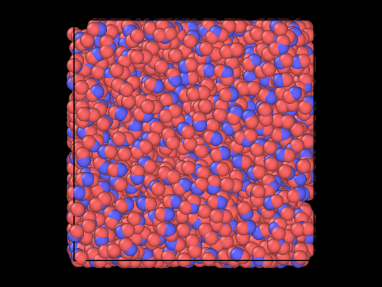
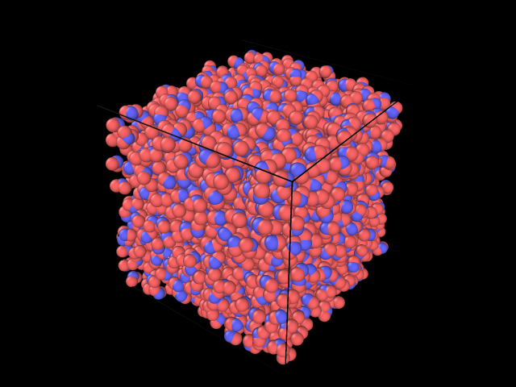

Introduction
Packing water
Find correct volume
Generate Packmol input script
Run Packmol
Convert to LAMMPS-friendly format
The complexity of water is what makes it hard to find flexible potentials. The water molecules are not static, the distance between the atoms and the three-body angle changes with time, and occasionally OH$^-$-groups and H$_3$O$^+$-groups will occur. Therefore, a realistic water potential does not model the water molecule as a static object, but instead it should set up an inter-atomic potential between all the atoms, based on charge interaction, dipole-dipole-interaction, van der Vaals interactions and so on.
The Vashishta potential is an inter-atomic potential developed by Vashishta et al. at the University of Southern California. It is very flexible, and has shown impressive power as silica potential (Vashishta, 1990), SiC potential (Vashishta, 2007) and InP potential (Branicio, 2009). We aim to tweak the parameters in the potential such that the water behaves realistic under 1 atm pressure.
WaterPack found in python/pack_water.py contains a function for this, and the length can be found from
from pack_water import WaterPack
number = 2000 # Number of water molecules
density = 0.9966 # Density of water at 25°C and 1atm
packer = WaterPack(number)
length = packer.den2len(density) # Length of box in [Å]
packer.packmol_gen(pbc=1.0)
The argument pbc=1.0 is added to have an appropriate spacing between the molecules also at the boundaries.
packer.packmol_run()
PS: This requires that the Packmol package is installed correctly. See the Packmol webpage.
read_data = "data/water_lmps.data"
packer.xyz2lmp(read_data)
Now we finally have a realistic initial water configuration. It is presented in figures 1 and 2.
Figure 1: Initial configuration of water, seen from the front.

Figure 2: Initial configuration of water, seen from perspective.
